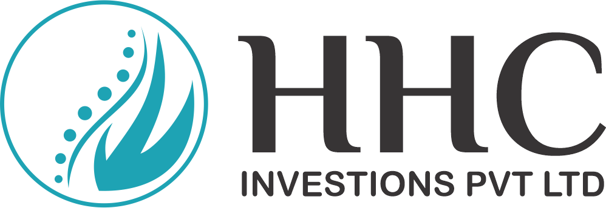

Shasti Physio Clinic, renowned for its advanced physiotherapy services in Chennai, is proud to partner with HHC Maldives to establish a physiotherapy clinic in the Maldives. Our commitment to quality and safety, combined with HHC's dedication to supplying a range of quality products, ensures unparalleled service to the Maldivian market.
Meet our team of highly qualified and specialist physiotherapists, led by Dr. Ragunath Manogaran and Dr. Sagunthalai Ragunath, who bring their expertise to the Maldives in collaboration with HHC Maldives.
Shasti has been actively involved with the Tamil Nadu Physiotherapy and Acupuncture Association since 2009, conducting many free camps in rural areas. This spirit of community service will be at the heart of our operations in the Maldives.
Connect with us to learn more about our services or schedule an appointment at our new clinic in the Maldives.